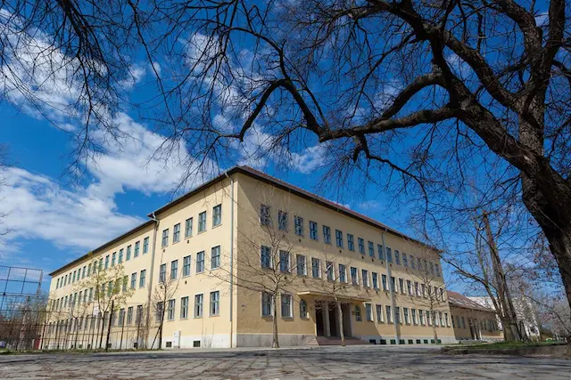

Iskolatörténet
Baja város kereskedelmi, közlekedési csomópont a Dunántúl és az Alföld között.
Fejlődő ipara, jelentős kereskedelme az 1920-as évek elején felvetette annak igényét, hogy az ipari és kereskedelmi élet szervezésére, irányítására képes szakembereket a városban képezzék. A Baross-szövetség Bajai Fiókja 1922. február 3-i ülésén indítványozta a Felsőkereskedelmi Iskola alapítását. A Vallás- és Közoktatásügyi Minisztérium engedélye alapján 1923. szeptember 9-én nyitották meg a Négy évfolyamú Fiú Felsőkereskedelmi Iskolát. Az iskola alapvető célja az volt, hogy a tanulóknak kereskedelmi, közgazdasági szakképzettséget és általános műveltséget adjon. Az első osztályba 33 fiú iratkozott be. A beinduló iskolának a Tanítóképző Intézet adott helyet, a következő tanévtől pedig a Tanonciskolával és a Női Felsőkereskedelmi Iskolával közösen használtak egy épületet.
Az iskola létrejött. Ahhoz, hogy betölthesse feladatát még nagyon sok problémával kellett megbirkózni. Elhelyezése ideiglenes volt. A fenntartási költségeket az államkincstár fizette. Az első felszerelés, bútorzat beszerzése a város költsége volt. Az iskola első igazgatója LEGÁNY DEZSŐ, akinek az első teendője a tanári testület összeállítása volt. Az iskola 1925-ben kezdeményezte TÜRR ISTVÁN nevének a felvételét. Ezt a kultuszminisztérium engedélyezte.
Az 1926/1927. tanévtől kezdve az iskolának mind a négy évfolyama működött. A tanulók létszáma örvendetesen nőtt. 1932. május 12-én a törvényhatósági bizottság Legány Dezső igazgató előreterjesztett javaslatát elfogadta, hogy a jelenleg használt iskola épületet átalakítsák, bővítsék. Az 1933/1934. tanév fénypontja az új épület birtokba vétele volt. Az 1960/1961. tanévben már három párhuzamos első osztály indult, a képzési profil is bővült. Az iskola az 1961-es emeletátépítéssel elnyerte végső alakját. Az 1967-68. tanévben megszűntek a technikumi osztályok. A TÜRR teljes egészében szakközépiskola lett.
Névváltoztatások
- 1923/1924. Bajai Négyévfolyamú Fiú Felsőkereskedelmi Iskola, majd Bajai Négyévfolyamú Női Felsőkereskedelmi Iskola
- 1936/1937. Türr István Fiú Felsőkereskedelmi Iskola
- 1949/1950. Türr István Közgazdasági Gimnázium
- 1951/1952. Türr István Közgazdasági Középiskola
- 1952/1953. Türr István Közgazdasági Technikum
- 1962/1963. Türr István Közgazdasági Technikum és Közgazdasági Szakközépiskola
- 1965/1966. Türr István Közgazdasági Szakközépiskola
- 1978/1979. Türr István Közgazdasági és Postaforgalmi Szakközépiskola
- 2003/2004. Türr István Gazdasági Szakközépiskola
- 2015/2016. Bajai SzC Türr István Gazdasági Szakközépiskolája
- 2016/2017. Bajai SzC Türr István Gazdasági Szakgimnáziuma
- 2020/2021 Bajai SZC Türr István Technikum
Igazgatóink
- Legányi Dezső (1923. augusztus 8. – 1933. július 5.)
- Dr. Kerekes György (1933. július 5. – 1936. július 6.)
- Molnár József (1936. július 6. – 1943. augusztus 1.)
- Homoky István (1943. augusztus 1. – 1947. október 3.)
- Kollonay Zoltán (1947. október 3. – 1947. december 2.)
- Forgács Géza (1948. július 1. – 1949. szeptember 19.)
- Dr. Balogh Károlyné (1947. december 2. – 1948. július 1. és 1949. szeptember 19. – 1966. augusztus 31.)
- Kvalla Ferenc (1966. szeptember 1. – 1990. július 31.)
- Sári Katalin (1990. augusztus 1. – 1993. június 30.)
- Berger József (1993. augusztus 1. – 2008. július 31.)
- Sárosi Magdolna (2013. szeptember 3. – 2016. június 30.)
- Daka Mónika (2016. július 1. – 2018. augusztus 31. )
- Junger Péter (2018. szeptember 1. – 2020. június 30.)
- Bor Katalin (2020.szeptember 16. - )